2024 Higher Physics - Paper 1 questions
Source: Scottish Qualifications Authority (SQA) / Qualifications Scotland. This is a StemInteract HTML companion, not an official HTML edition. Selectable text is supplied alongside original page images. Use the images or original PDF for equations, powers, fractions, vector notation, tables and diagrams; text extraction cannot fully preserve mathematical layout.
Jump to a question
PDF page 1
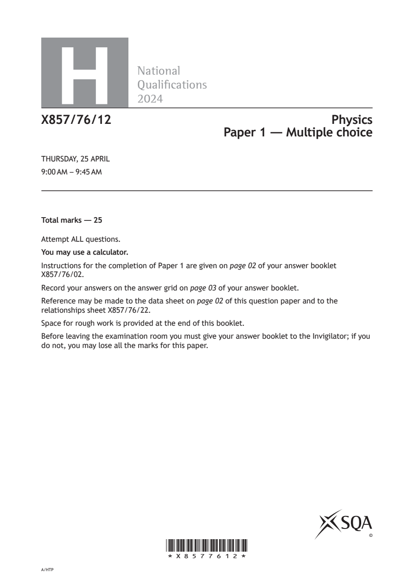
Selectable page text
H
National
Qualications
2024
X857/76/12 Physics
Paper 1 — Multiple choice
THURSDAY, 25 APRIL
9:00 AM – 9:45 AM
Total marks — 25
Attempt ALL questions.
You may use a calculator.
Instructions for the completion of Paper 1 are given on page 02 of your answer booklet
X857/76/02.
Record your answers on the answer grid on page 03 of your answer booklet.
Reference may be made to the data sheet on page 02 of this question paper and to the
relationships sheet X857/76/22.
Space for rough work is provided at the end of this booklet.
Before leaving the examination room you must give your answer booklet to the Invigilator; if you
do not, you may lose all the marks for this paper.
©
*X8577612*
A/HTPPDF page 2
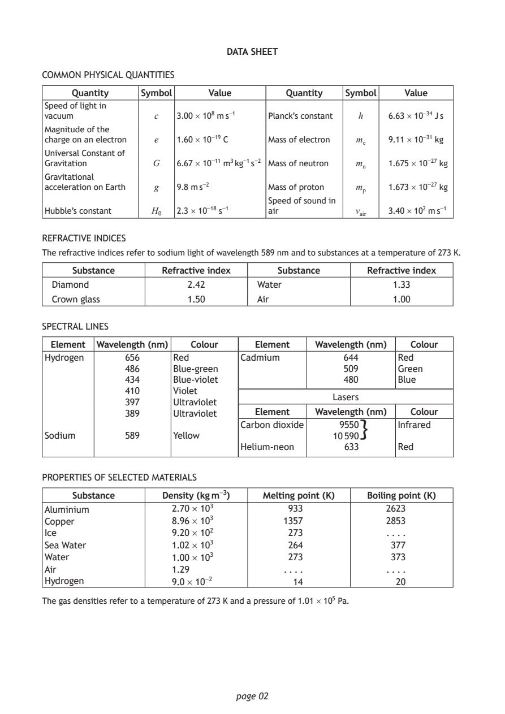
Selectable page text
DATA SHEET
COMMON PHYSICAL QUANTITIES
Quantity Symbol Value Quantity Symbol Value
Speed of light in
vacuum c 3.00 × 10⁸ m s⁻¹ Planck’s constant h 6.63 × 10⁻³⁴ J s
Magnitude of the
charge on an electron e 1.60 × 10⁻¹⁹ C Mass of electron mₑ 9.11 × 10⁻³¹ kg
Universal Constant of
Gravitation G 6.67 × 10⁻¹¹ m³ kg⁻¹ s⁻² Mass of neutron mₙ 1.675 × 10⁻²⁷ kg
Gravitational
acceleration on Earth g 9.8 m s⁻² Mass of proton mₚ 1.673 × 10⁻²⁷ kg
Speed of sound in
Hubble’s constant H₀ 2.3 × 10⁻¹⁸ s⁻¹ air vₐᵢᵣ 3.40 × 10² m s⁻¹
REFRACTIVE INDICES
The refractive indices refer to sodium light of wavelength 589 nm and to substances at a temperature of 273 K.
Substance Refractive index Substance Refractive index
Diamond 2.42 Water 1.33
Crown glass 1.50 Air 1.00
SPECTRAL LINES
Element Wavelength (nm) Colour Element Wavelength (nm) Colour
Hydrogen 656 Red Cadmium 644 Red
486 Blue-green 509 Green
434 Blue-violet 480 Blue
410 Violet
Lasers
397 Ultraviolet
389 Ultraviolet Element Wavelength (nm) Colour
Carbon dioxide 9550} Infrared
Sodium 589 Yellow 10 590
Helium-neon 633 Red
PROPERTIES OF SELECTED MATERIALS
Substance Density (kg m⁻³) Melting point (K) Boiling point (K)
Aluminium 2.70 × 10³ 933 2623
Copper 8.96 × 10³ 1357 2853
Ice 9.20 × 10² 273 . . . .
Sea Water 1.02 × 10³ 264 377
Water 1.00 × 10³ 273 373
Air 1.29 . . . . . . . .
Hydrogen 9.0 × 10⁻² 14 20
The gas densities refer to a temperature of 273 K and a pressure of 1.01 × 10⁵ Pa.
page 02PDF page 3
Paper 1, Question 1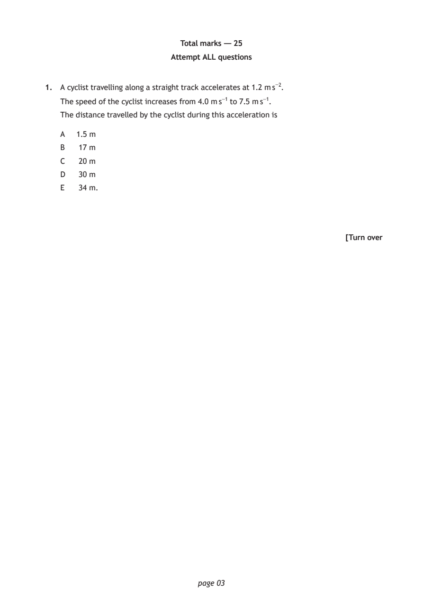
Selectable page text
Total marks — 25
Attempt ALL questions
1. A cyclist travelling along a straight track accelerates at 1.2 m s⁻².
The speed of the cyclist increases from 4.0 m s⁻¹ to 7.5 m s⁻¹.
The distance travelled by the cyclist during this acceleration is
A 1.5 m
B 17 m
C 20 m
D 30 m
E 34 m.
[Turn over
page 03PDF page 4
Paper 1, Question 2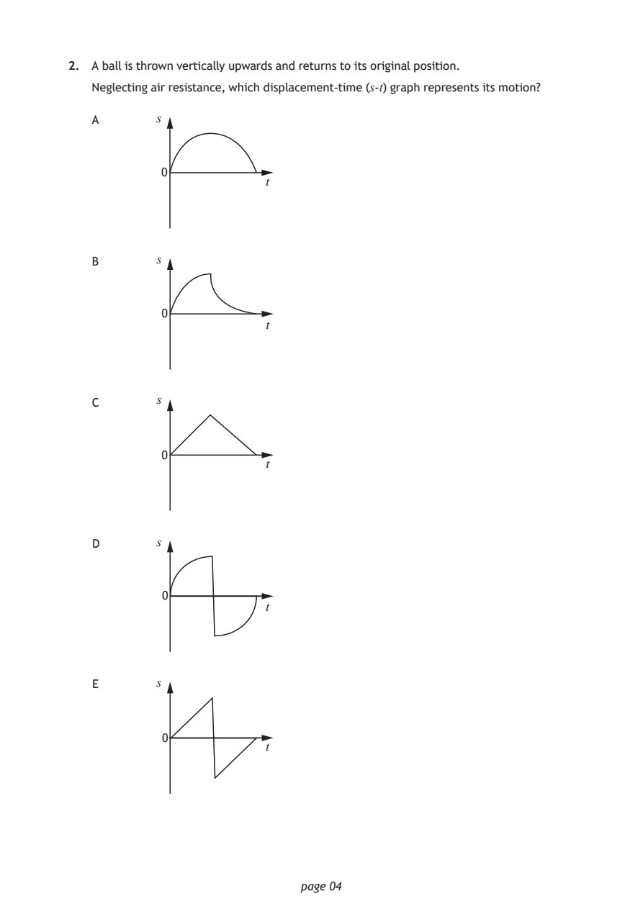
Selectable page text
2. A ball is thrown vertically upwards and returns to its original position.
Neglecting air resistance, which displacement-time (s-t) graph represents its motion?
A s
0
t
B s
0
t
C s
0
t
D s
0
t
E s
0
t
page 04PDF page 5
Paper 1, Question 3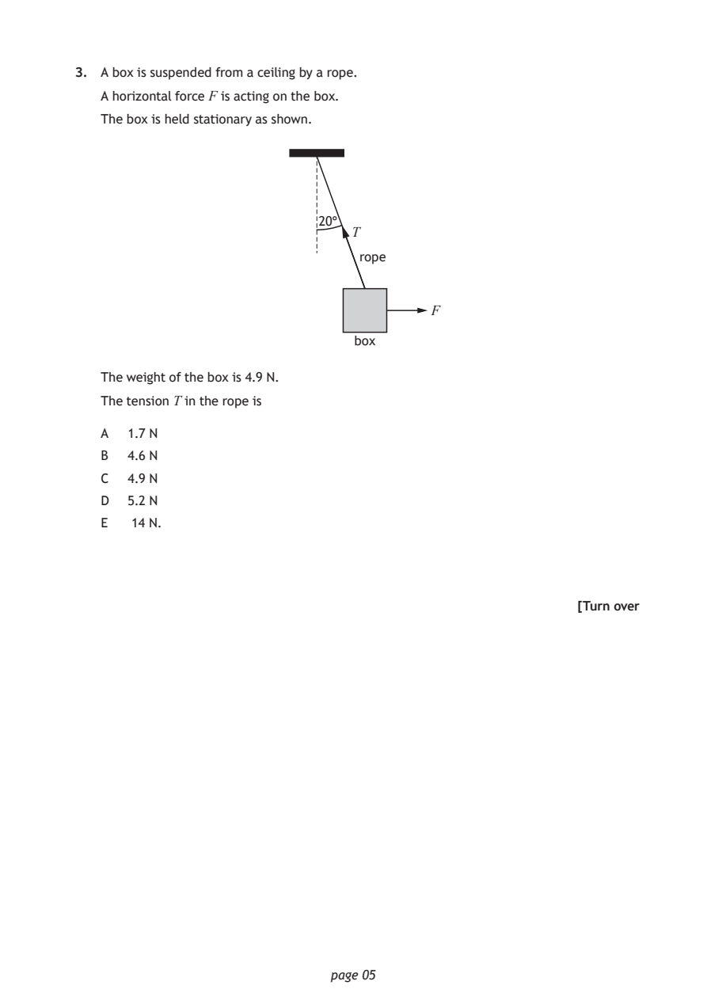
Selectable page text
3. A box is suspended from a ceiling by a rope.
A horizontal force F is acting on the box.
The box is held stationary as shown.
20°
T
rope
F
box
The weight of the box is 4.9 N.
The tension T in the rope is
A 1.7 N
B 4.6 N
C 4.9 N
D 5.2 N
E 14 N.
[Turn over
page 05PDF page 6
Paper 1, Question 4Paper 1, Question 5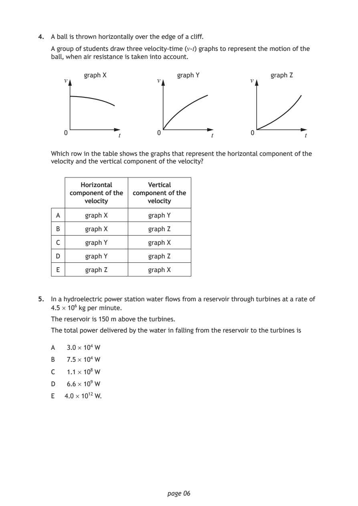
Selectable page text
4. A ball is thrown horizontally over the edge of a cliff.
A group of students draw three velocity-time (v-t) graphs to represent the motion of the
ball, when air resistance is taken into account.
graph X graph Y graph Z
v v v
0 0 0
t t t
Which row in the table shows the graphs that represent the horizontal component of the
velocity and the vertical component of the velocity?
Horizontal Vertical
component of the component of the
velocity velocity
A graph X graph Y
B graph X graph Z
C graph Y graph X
D graph Y graph Z
E graph Z graph X
5. In a hydroelectric power station water flows from a reservoir through turbines at a rate of
4.5 × 10⁶ kg per minute.
The reservoir is 150 m above the turbines.
The total power delivered by the water in falling from the reservoir to the turbines is
A 3.0 × 10⁴ W
B 7.5 × 10⁴ W
C 1.1 × 10⁸ W
D 6.6 × 10⁹ W
E 4.0 × 10¹² W.
page 06PDF page 7
Paper 1, Question 6Paper 1, Question 7Paper 1, Question 8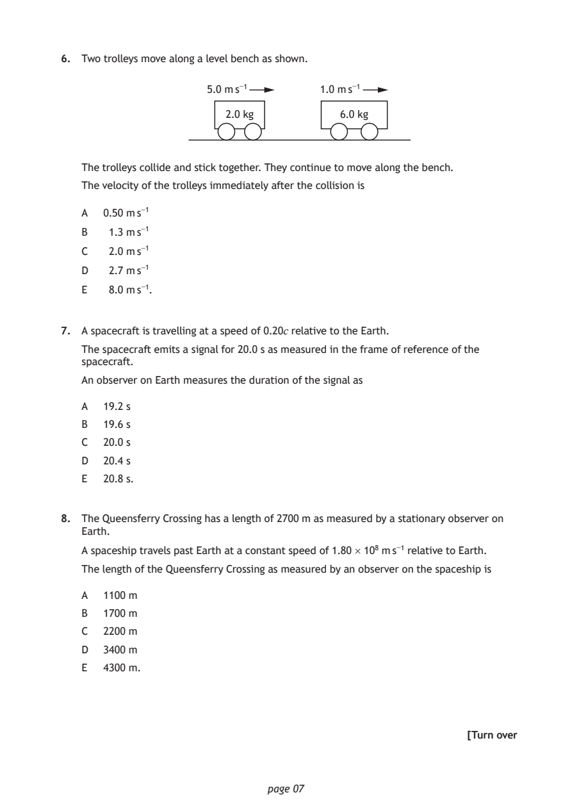
Selectable page text
6. Two trolleys move along a level bench as shown.
5.0 m s⁻¹ 1.0 m s⁻¹
2.0 kg 6.0 kg
The trolleys collide and stick together. They continue to move along the bench.
The velocity of the trolleys immediately after the collision is
A 0.50 m s⁻¹
B 1.3 m s⁻¹
C 2.0 m s⁻¹
D 2.7 m s⁻¹
E 8.0 m s⁻¹.
7. A spacecraft is travelling at a speed of 0.20c relative to the Earth.
The spacecraft emits a signal for 20.0 s as measured in the frame of reference of the
spacecraft.
An observer on Earth measures the duration of the signal as
A 19.2 s
B 19.6 s
C 20.0 s
D 20.4 s
E 20.8 s.
8. The Queensferry Crossing has a length of 2700 m as measured by a stationary observer on
Earth.
A spaceship travels past Earth at a constant speed of 1.80 × 10⁸ m s⁻¹ relative to Earth.
The length of the Queensferry Crossing as measured by an observer on the spaceship is
A 1100 m
B 1700 m
C 2200 m
D 3400 m
E 4300 m.
[Turn over
page 07PDF page 8
Paper 1, Question 9Paper 1, Question 10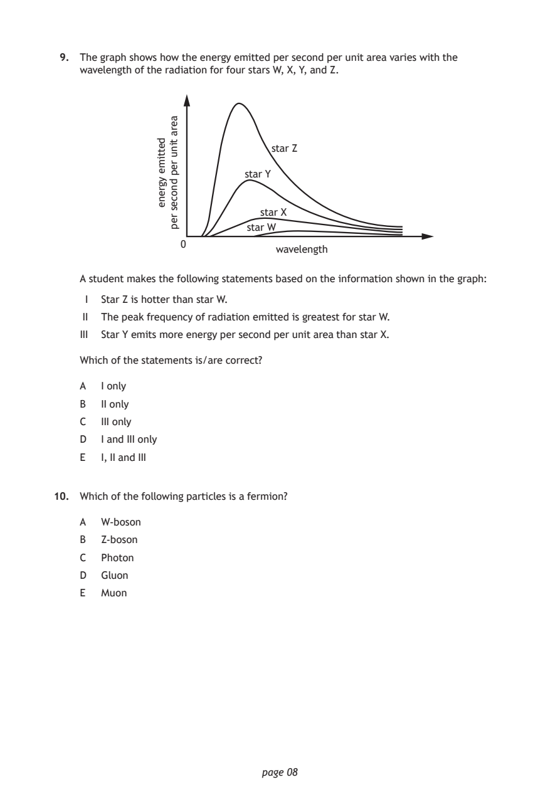
Selectable page text
9. The graph shows how the energy emitted per second per unit area varies with the
wavelength of the radiation for four stars W, X, Y, and Z.
star Z
star Y
star X
star W
0
wavelength
page 08
dettime
ygrene
aera
tinu
rep
dnoces
rep
A student makes the following statements based on the information shown in the graph:
I Star Z is hotter than star W.
II The peak frequency of radiation emitted is greatest for star W.
III Star Y emits more energy per second per unit area than star X.
Which of the statements is/are correct?
A I only
B II only
C III only
D I and III only
E I, II and III
10. Which of the following particles is a fermion?
A W-boson
B Z-boson
C Photon
D Gluon
E MuonPDF page 9
Paper 1, Question 11Paper 1, Question 12Paper 1, Question 13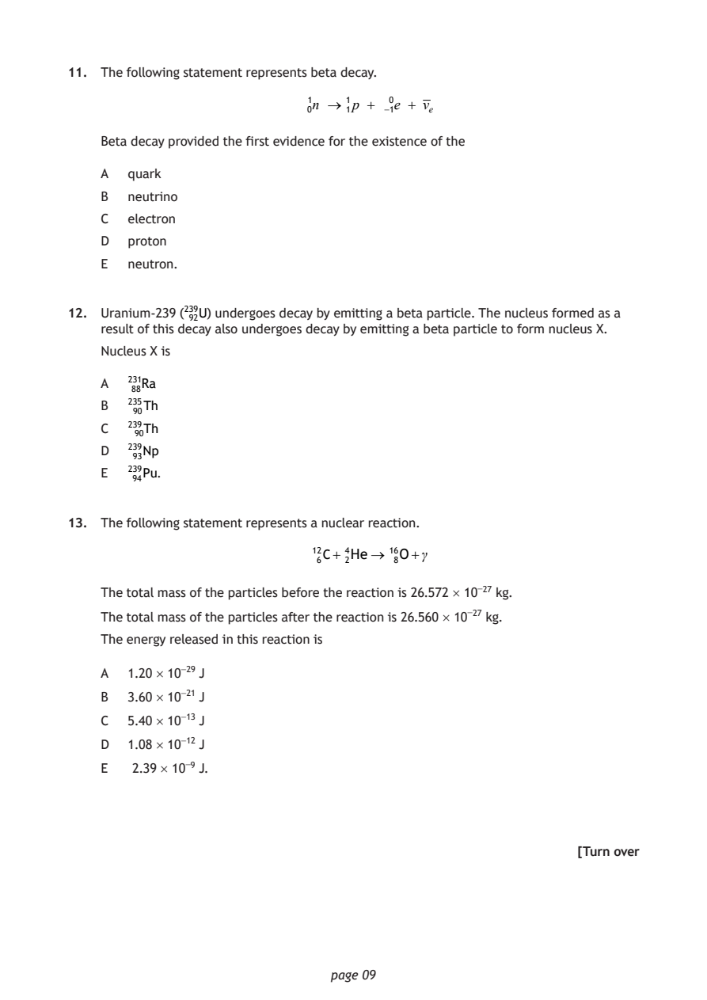
Selectable page text
11. The following statement represents beta decay.
1n 1p + 0e + νₑ
0 1 −1
Beta decay provided the first evidence for the existence of the
A quark
B neutrino
C electron
D proton
E neutron.
12. Uranium-239 (²³⁹U) undergoes decay by emitting a beta particle. The nucleus formed as a
result of this de⁹c²ay also undergoes decay by emitting a beta particle to form nucleus X.
Nucleus X is
A ²31Ra
88
B ²35Th
90
C ²39Th
90
D ²39Np
93
E ²39Pu.
94
13. The following statement represents a nuclear reaction.
12C+ ⁴₂He ¹6O+γ
6 8
The total mass of the particles before the reaction is 26.572 × 10⁻²⁷ kg.
The total mass of the particles after the reaction is 26.560 × 10⁻²⁷ kg.
The energy released in this reaction is
A 1.20 × 10⁻²⁹ J
B 3.60 × 10⁻²¹ J
C 5.40 × 10⁻¹³ J
D 1.08 × 10⁻¹² J
E 2.39 × 10⁻⁹ J.
[Turn over
page 09PDF page 10
Paper 1, Question 14Paper 1, Question 15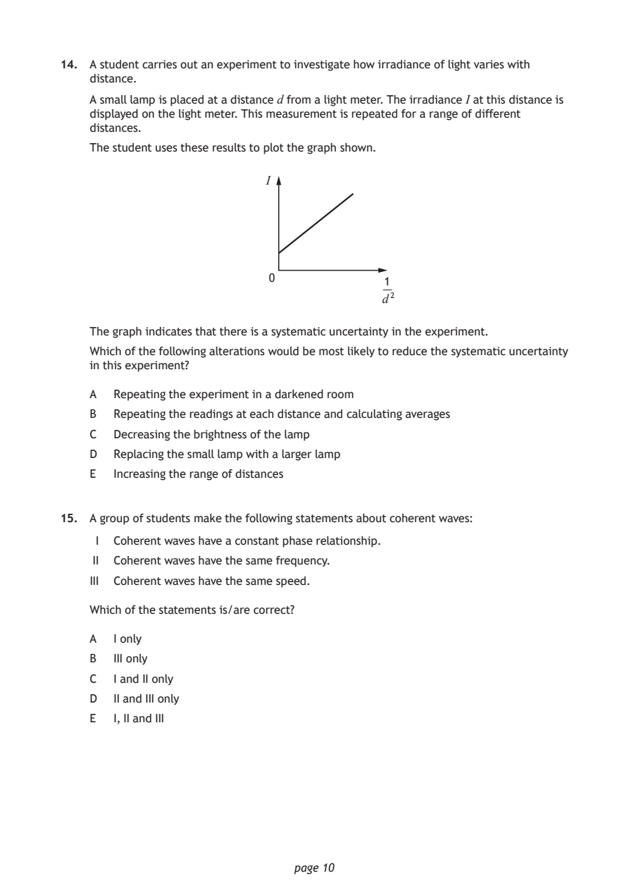
Selectable page text
14. A student carries out an experiment to investigate how irradiance of light varies with
distance.
A small lamp is placed at a distance d from a light meter. The irradiance I at this distance is
displayed on the light meter. This measurement is repeated for a range of different
distances.
The student uses these results to plot the graph shown.
I
0
1
d ²
The graph indicates that there is a systematic uncertainty in the experiment.
Which of the following alterations would be most likely to reduce the systematic uncertainty
in this experiment?
A Repeating the experiment in a darkened room
B Repeating the readings at each distance and calculating averages
C Decreasing the brightness of the lamp
D Replacing the small lamp with a larger lamp
E Increasing the range of distances
15. A group of students make the following statements about coherent waves:
I Coherent waves have a constant phase relationship.
II Coherent waves have the same frequency.
III Coherent waves have the same speed.
Which of the statements is/are correct?
A I only
B III only
C I and II only
D II and III only
E I, II and III
page 10PDF page 11
Paper 1, Question 16Paper 1, Question 17Paper 1, Question 18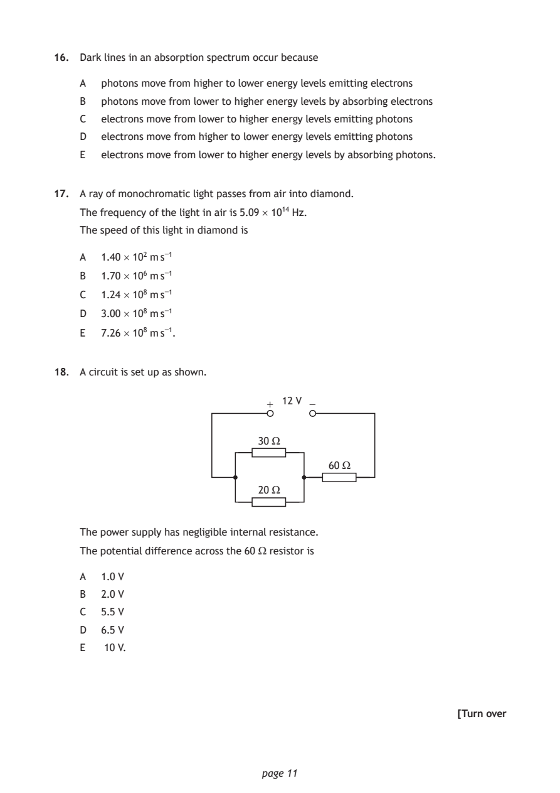
Selectable page text
16. Dark lines in an absorption spectrum occur because
A photons move from higher to lower energy levels emitting electrons
B photons move from lower to higher energy levels by absorbing electrons
C electrons move from lower to higher energy levels emitting photons
D electrons move from higher to lower energy levels emitting photons
E electrons move from lower to higher energy levels by absorbing photons.
17. A ray of monochromatic light passes from air into diamond.
The frequency of the light in air is 5.09 × 10¹⁴ Hz.
The speed of this light in diamond is
A 1.40 × 10² m s⁻¹
B 1.70 × 10⁶ m s⁻¹
C 1.24 × 10⁸ m s⁻¹
D 3.00 × 10⁸ m s⁻¹
E 7.26 × 10⁸ m s⁻¹.
18. A circuit is set up as shown.
+ 12 V −
30 Ω
60 Ω
20 Ω
The power supply has negligible internal resistance.
The potential difference across the 60 Ω resistor is
A 1.0 V
B 2.0 V
C 5.5 V
D 6.5 V
E 10 V.
[Turn over
page 11PDF page 12
Paper 1, Question 19Paper 1, Question 20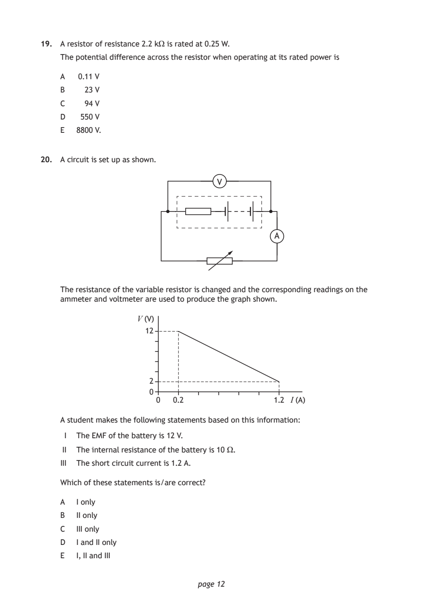
Selectable page text
19. A resistor of resistance 2.2 kΩ is rated at 0.25 W.
The potential difference across the resistor when operating at its rated power is
A 0.11 V
B 23 V
C 94 V
D 550 V
E 8800 V.
20. A circuit is set up as shown.
V
A
The resistance of the variable resistor is changed and the corresponding readings on the
ammeter and voltmeter are used to produce the graph shown.
V (V)
12
2
0
0 0.2 1.2 I (A)
A student makes the following statements based on this information:
I The EMF of the battery is 12 V.
II The internal resistance of the battery is 10 Ω.
III The short circuit current is 1.2 A.
Which of these statements is/are correct?
A I only
B II only
C III only
D I and II only
E I, II and III
page 12PDF page 13
Paper 1, Question 21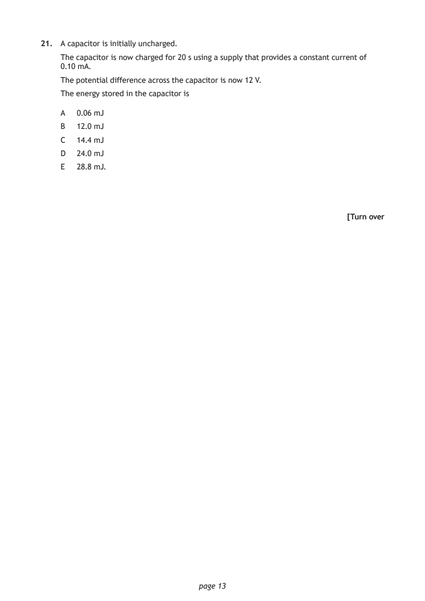
Selectable page text
21. A capacitor is initially uncharged.
The capacitor is now charged for 20 s using a supply that provides a constant current of
0.10 mA.
The potential difference across the capacitor is now 12 V.
The energy stored in the capacitor is
A 0.06 mJ
B 12.0 mJ
C 14.4 mJ
D 24.0 mJ
E 28.8 mJ.
[Turn over
page 13PDF page 14
Paper 1, Question 22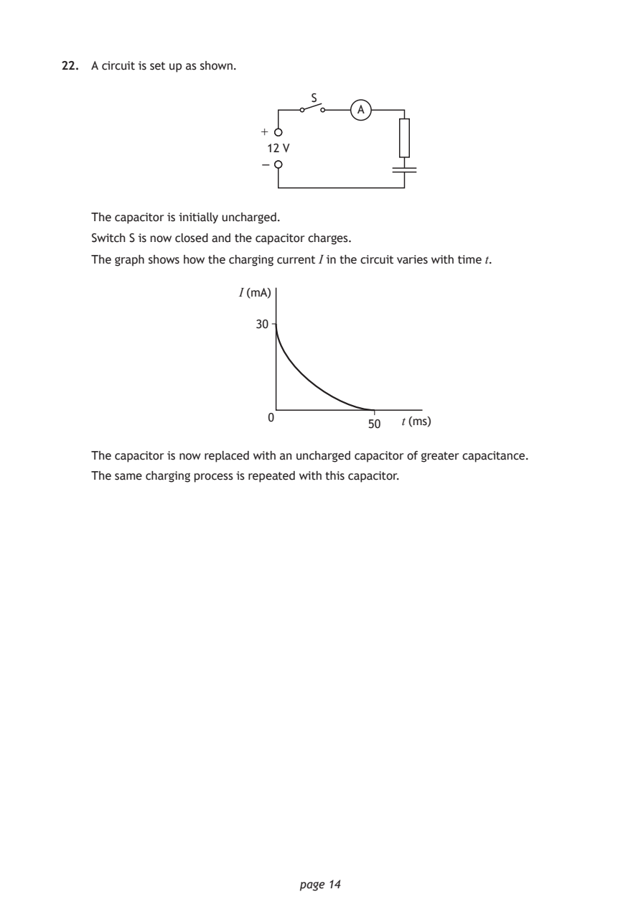
Selectable page text
22. A circuit is set up as shown.
page 14
+
–
S
A
12 V
The capacitor is initially uncharged.
Switch S is now closed and the capacitor charges.
The graph shows how the charging current I in the circuit varies with time t.
I (mA)
30
0 50 t (ms)
The capacitor is now replaced with an uncharged capacitor of greater capacitance.
The same charging process is repeated with this capacitor.PDF page 15
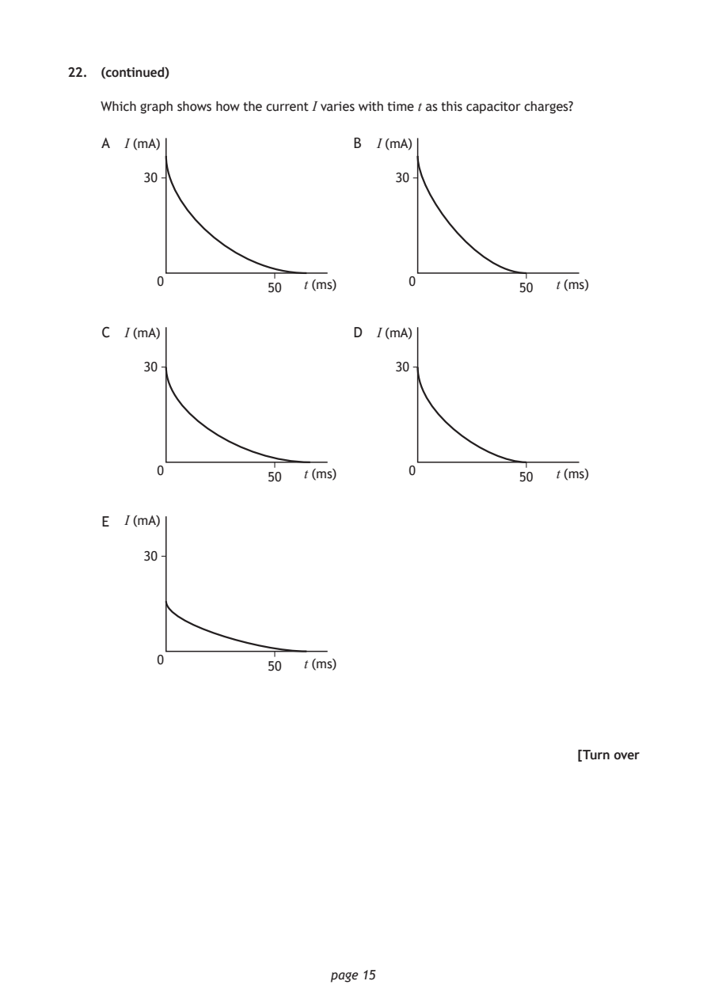
Selectable page text
22. (continued)
Which graph shows how the current I varies with time t as this capacitor charges?
A I (mA) B I (mA)
30 30
0 50 t (ms) 0 50 t (ms)
C I (mA) D I (mA)
30 30
0 50 t (ms) 0 50 t (ms)
E I (mA)
30
0
50 t (ms)
[Turn over
page 15PDF page 16
Paper 1, Question 23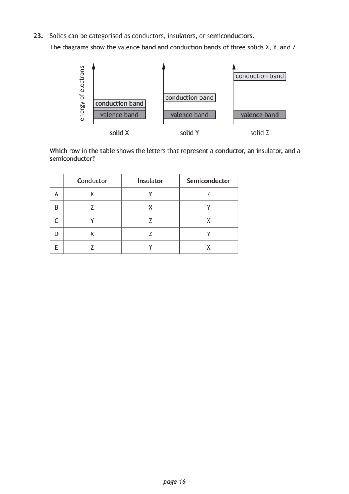
Selectable page text
23. Solids can be categorised as conductors, insulators, or semiconductors.
The diagrams show the valence band and conduction bands of three solids X, Y, and Z.
page 16
snortcele
fo
ygrene
conduction band
conduction band
conduction band
valence band valence band valence band
solid X solid Y solid Z
Which row in the table shows the letters that represent a conductor, an insulator, and a
semiconductor?
Conductor Insulator Semiconductor
A X Y Z
B Z X Y
C Y Z X
D X Z Y
E Z Y XPDF page 17
Paper 1, Question 24Paper 1, Question 25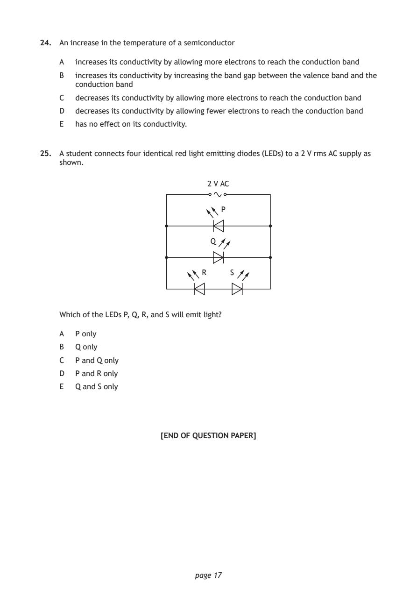
Selectable page text
24. An increase in the temperature of a semiconductor
A increases its conductivity by allowing more electrons to reach the conduction band
B increases its conductivity by increasing the band gap between the valence band and the
conduction band
C decreases its conductivity by allowing more electrons to reach the conduction band
D decreases its conductivity by allowing fewer electrons to reach the conduction band
E has no effect on its conductivity.
25. A student connects four identical red light emitting diodes (LEDs) to a 2 V rms AC supply as
shown.
2 V AC
P
Q
R S
Which of the LEDs P, Q, R, and S will emit light?
A P only
B Q only
C P and Q only
D P and R only
E Q and S only
[END OF QUESTION PAPER]
page 17PDF page 18
Selectable page text
SPACE FOR ROUGH WORK
page 18PDF page 19

Selectable page text
SPACE FOR ROUGH WORK
page 19PDF page 20

Selectable page text
[BLANK PAGE]
DO NOT WRITE ON THIS PAGE
page 20